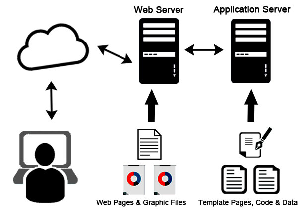

- Client/Server concepts
- Components of Web Application
- Types of Web Content
- Overview of HTTP - HTTP request – response Generation of dynamic web pages
- Application server
- Web Security
1.Client/Server concepts
The client-server model, or client-server architecture, is a distributed application framework dividing tasks between servers and clients, which either reside in the same system or communicate through a computer network or the Internet. The client relies on sending a request to another program in order to access a service made available by a server. The server runs one or more programs that share resources with and distribute work among clients. The client server relationship communicates in a request–response messaging pattern and must adhere to a common communications protocol, which formally defines the rules, language, and dialog patterns to be used. Client-server communication typically adheres to the TCP/IP protocol suite. TCP protocol maintains a connection until the client and server have completed the message exchange. TCP protocol determines the best way to distribute application data into packets that networks can deliver, transfers packets to and receives packets from the network, and manages flow control and retransmission of dropped or garbled packets. IP is a connectionless protocol in which each packet traveling through the Internet is an independent unit of data unrelated to any other data units. Client requests are organized and prioritized in a scheduling system, which helps servers cope in the instance of receiving requests from many distinct clients in a short space of time. The client-server approach enables any general-purpose computer to expand its capabilities by utilizing the shared resources of other hosts. Popular client-server applications include email, the World Wide Web, and network printing. Categories of Client-Server Computing There are four main categories of client-server computing: One-Tier architecture: consists of a simple program running on a single computer without requiring access to the network. User requests don’t manage any network protocols, therefore the code is simple and the network is relieved of the extra traffic. Two-Tier architecture: consists of the client, the server, and the protocol that links the two tiers. The Graphical User Interface code resides on the client host and the domain logic resides on the server host. The client-server GUI is written in high-level languages such as C++ and Java. Three-Tier architecture: consists of a presentation tier, which is the User Interface layer, the application tier, which is the service layer that performs detailed processing, and the data tier, which consists of a database server that stores information. N-Tier architecture: divides an application into logical layers, which separate responsibilities and manage dependencies, and physical tiers, which run on separate machines, improve scalability, and add latency from the additional network communication. N-Tier architecture can be closed-layer, in which a layer can only communicate with the next layer down, or open-layer, in which a layer can communicate with any layers below it.
2.Components of Web Application

The Internet is no longer about static web pages and longer loading times. Over time, the Internet has made a shift towards active user engagement as well as extended functionality by means of visually pleasing and powerful web applications.
A web application is just like a normal computer application except that it works over the Internet. As everyone is on the web these days, most developers are looking to benefit from web apps and attract as many users as possible via opportune offerings.
Before venturing onto a web application development project, it is important to choose the type of web application architecture as well as the model of web app components. Making the right picks are important for the success of a web app.
We’ll discuss how the web application architecture works, its components, models, types, and then some tips to make the most out of a web application development project. But before all that, let’s begin with the definition of the web application architecture.
3.Types of Web Content
Web content is the textual, visual, or aural content that is encountered as part of the user experience on websites. It may include—among other things—text, images, sounds, videos, and animations.Blogs are a type of websites that contain mainly web pages authored in HTML (although the blogger may be completely unaware that the web pages are composed using HTML due to the blogging tool that may be in use). Millions of people use blogs online; a blog is now the new "home page", that is, a place where a persona can reveal personal information, and/or build a concept as to who this persona is. Even though a blog may be written for other purposes, such as promoting a business, the core of a blog is the fact that it is written by a "person" and that person reveals information from her/his perspective. Blogs have become a mighty weapon used by content marketers who desire to increase their site's traffic, as well as, rank in the search engine result pages (SERPs). Modern research from Technorati shows that blogs now outrank social networks for consumer influence (Technorati's 2013 Digital Influence Report data).
Search engine sites are composed mainly of HTML content, but also has a typically structured approach to revealing information. A Search Engine Results Page (SERP) displays a heading, usually the name of the search engine itself, and then a list of websites and their web addresses. The web addresses are listed by their order of relevance according to the search query. Searchers typically type in keywords or keyword phrases to find or search what they are looking for on the web.
Discussion boards are sites composed of "textual" content organized by HTML or some variation that can be viewed in a web browser. The driving mechanism of a discussion board is the fact that users are registered and once registered can write posts. Often a discussion board is made up of posts asking some question to which other users may provide answers to those questions.
Ecommerce sites are primarily composed of textual material and embedded with graphics displaying a picture of the item(s) for sale. However, there are extremely few sites that are composed page-by-page using some variant of HTML. Generally, webpages are formed as they are being served from a database to a customer using a web browser. However, the user sees the mainly text document arriving as a webpage to be viewed in a web browser. Ecommerce sites are usually organized by the software we identify as a "shopping cart".
4.Overview of HTTP - HTTP request – response Generation of dynamic web pages
An HTTP request is made by a client, to a named host, which is located on a server. The aim of the request is to access a resource on the server. To make the request, the client uses components of a URL (Uniform Resource Locator), which includes the information needed to access the resource. The components of a URL explains URLs. A correctly composed HTTP request contains the following elements: A request line. A series of HTTP headers, or header fields. A message body, if needed. Each HTTP header is followed by a carriage return line feed (CRLF). After the last of the HTTP headers, an additional CRLF is used (to give an empty line), and then any message body begins.
A server-side dynamic web page is a web page whose construction is controlled by an application server processing server-side scripts. In server-side scripting, parameters determine how the assembly of every new web page proceeds, including the setting up of more client-side processing. A client-side dynamic web page processes the web page using JavaScript running in the browser as it loads. JavaScript can interact with the page via Document Object Model, or DOM, to query page state and modify it. Even though a web page can be dynamic on the client-side, it can still be hosted on a static hosting service such as GitHub Pages or Amazon S3 as long as there isn't any server-side code included. A dynamic web page is then reloaded by the user or by a computer program to change some variable content. The updating information could come from the server, or from changes made to that page's DOM. This may or may not truncate the browsing history or create a saved version to go back to, but a dynamic web page update using AJAX technologies will neither create a page to go back to, nor truncate the web browsing history forward of the displayed page. Using AJAX, the end user gets one dynamic page managed as a single page in the web browser while the actual web content rendered on that page can vary. The AJAX engine sits only on the browser requesting parts of its DOM, the DOM, for its client, from an application server. DHTML is the umbrella term for technologies and methods used to create web pages that are not static web pages, though it has fallen out of common use since the popularization of AJAX, a term which is now itself rarely used. Client-side-scripting, server-side scripting, or a combination of these make for the dynamic web experience in a browser.
5.Application Servers

An application server is a server that hosts applications.
Application server frameworks are software frameworks for building application servers. An application server framework provides both facilities to create web applications and a server environment to run them.
An application server framework contains a comprehensive service layer model. It includes a set of components accessible to the software developer through a standard API defined for the platform itself. For Web applications, these components usually run in the same environment as their web server(s), and their main job is to support the construction of dynamic pages. However, many application servers do more than generate web pages: they implement services such as clustering, fail-over, and load-balancing, so developers can focus on implementing the business logic.[2]
In the case of Java application servers, the server behaves like an extended virtual machine for running applications, transparently handling connections to the database on one side, and, often, connections to the Web client on the other.
6.Web Security
Web security must be a critical priority for every organization. Along with email, the web is one of the top vectors for cyberattacks. The web and the use of DNS services specifically are part of 91% of all malware attacks, and email and web together are a key part for 99% of successful breaches. While the importance of web security is undisputed, protecting against web security threats grows more challenging each day. From thwarting attacks to dealing with limits in skills and resources, IT security departments face serious challenges when trying to secure the web. In the past, security teams have deployed a collection of on-premises solutions to manage email and web security. But increasingly organizations are turning to comprehensive email and web security solutions – via integrated, cloud-based technologies that simplify the task and reduce the cost of reducing risk. And because attackers often leverage email and web channels together, a seamless and scalable strategy for protecting both is essential. In general, web security refers to the protective measures and protocols that organizations adopt to protect the organization from, cyber criminals and threats that use the web channel. Web security is critical to business continuity and to protecting data, users and companies from risk. A web security gateway protects organizations against online threats by monitoring and filtering internet traffic in real time and blocking traffic deemed to be suspicious, malicious, or outside of policy. Mimecast Web Security functions as a web security gateway, enabling access to benign websites and blocking access to inappropriate sites. Web security threats are vulnerabilities within websites and applications, or attacks launched by malicious actors. Web security threats are designed to breach an organizations security defenses, enabling hackers and cyber criminals to control systems, access data and steal valuable resources. Common web security threats include malware, ransomware, cross-site scripting (XSS), SQL injection, phishing, denial of service and many others.